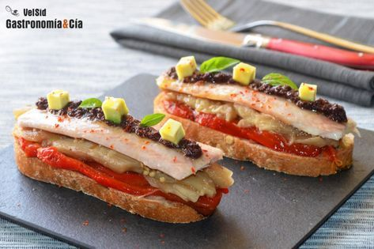

Bebida fría de chocolate| Recetas Nestlé
- Bebidas de café frías para combatir el calor del verano
- recetas de bebidas frias para primavera - Cocina Delirante
- 480 ideas de BEBIDAS CALIENTES en 2021 - Pinterest
- Bebidas frias - 7.706 recetas caseras- Cookpad
- Siete bebidas refrescantes para el verano y siete .
- 10 recetas de bebidas frías y calientes que están .
- Recetas de bebidas frías, y mucho más - Monin - Monin
- Recetas de Bebidas Frías - Kiwilimón
- Bebidas frías - Kraft Foods
¡Aprende a preparar Agua de frutas deslactosada con esta fácil y divertida! Cocina con Inspiración y descubre todos los tips saludables que NESTLÉ tiene . - Bebidas frias y calientes - Recetas La Serenísima

Pasar al contenido principal
Recetas Nestlé
Iniciar sesión Registrarse Menu Close ¿Qué quieres cocinar hoy? Recetas Todas las recetas 4 Formas de preparar Elige los ingredientes Tiempo Desayunos Comidas Cenas Entradas Sopas y Cremas Pizza Platos Fuertes Postres Ingredientes Pollo Carne Pescado Pasta Atún Carne molida Vegetales Postres Galletas Gelatinas Pasteles y tartas Con chocolate Sin Horno Temporalidades Navidad Cuaresma Madres Halloween Día de Muertos Recetarios Recetarios descargables Todos los recetarios Regístrate ó Inicia Sesión y descargables
Recetarios Gratis
Bebida fría de chocolate
BEBIDA FRÍA DE CHOCOLATE preparada con LECHE EVAPORADA CARNATION® CLAVEL®.
Comprar ingredientesSobrescribir enlaces de ayuda a la navegación
Home Recetas Bebida fría de chocolate 1 2 3 4 5 Evalúa la receta Open recipe list Marcar como cocinada Ya cociné este platillo ¡Felicidades!
¡Sigue cocinando con Recetas Nestlé! Tu receta ha sido añadida a tu lista de recetas cocinadas.
¡Felicidades!
¡Sigue cocinando con Recetas Nestlé! Tu receta ha sido añadida a tu lista de recetas cocinadas.
Se han guardado los ingredientes de la receta.
Ir a mi lista del súper Permanecer en la recetaIngredientes
Instrucciones
Licúa
Licua la Leche Evaporada CARNATION® CLAVEL® junto con la Leche Condensada LA LECHERA® , el agua y el Alimento en Polvo para Preparar Bebida Sabor a Chocolate MORELIA PRESIDENCIAL®.
Consejo culinario
Agrega hielo triturado o en cubos para dar un toque refrescante a la bebida.
Consejo nutrimental
La leche es rica en calcio.
Tips
Tip para Bebida fría de chocolate: Puedes licuar con un poco de hielo para convertirlo en frappé.Utensilios
LicuadoraInformación nutricional: 150kcal = 627kj /por porción
0.08 (mg) Vitamina E 0.32 IU Vitamina D 30.68 IU Vitamina A 35.96 (mg) Magnesio 165.91 (mg) Potasio 1.08 (mcg) Folato Alimentario 1.78 (mg) Hierro 151.41 (mg) Calcio 2.11 (g) Grasas saturadas 46.49 (mg) Sodio 4.77 (tbsp) Azúcar añadido 24.07 (g) Azúcares 1.17 (g) Fibra 3.40 (g) Grasas 3.48 (g) Proteina 25.70 (g) Carbohidratos 149.86 Kcal Energía Marcar como cocinada Ya cociné este platillo ¡Felicidades!
¡Sigue cocinando con Recetas Nestlé! Tu receta ha sido añadida a tu lista de recetas cocinadas.
Recetas relacionadas
Open recipe listHuevos al plato con curry
Intermedio 25min Open recipe listSmoothie de yoghurt
Fácil 5min Open recipe listAtole de dulce de leche
Fácil 22min Open recipe listAgua de Chicozapote
Fácil 17min Open recipe listAcelgas en Leche
Fácil 10min Open recipe listBatido de fresa
Intermedio 5min Open recipe listTostaditas francesas
Fácil 10min Open recipe listSmoothie de frutos rojos deslactosado
Fácil 17min Open recipe listAgua de durazno
Fácil 10min Open recipe listBatido cremosito de yogurt
Fácil 5minBúsquedas Similares
Bebida mexicano Amigos Fácil Almuerzo Tarde Desayuno Bocadillo Primavera Verano¿A quién consentiste con esta rica receta? Cuéntanos cómo te quedó.
Iniciar sesión Registrarme CloseHaz tu menú balanceado
¡Muy Bien Hecho!
Tienes un menú muy bien equilibrado
¡Buen Trabajo!
Tu menú esta cerca de ser equilibrado
¡Oops!
Puedes hacerlo mucho mejor
¿Qué tan equilibrado está tu menú?
Lee más
¡Para mejorarlo un poco más puedes añadir un platillo adecuado!
¡Ya casi lo logras! Mejora tu menú con un platillo adecuado!
¡Vamos tu puedes mejorarlo con un platillo adecuado!
Complementa con tu platillo preferido
Entradas Guarniciones Postres Cerrar VolverUn menú equilibrado proporciona variedad basada en los grupos de alimentos, sus calorías y nutrimentos relacionados.
La puntuación nutricional considera los nutrimentos que contienen los alimentos y proporciona una estimación de cómo el menú seleccionado contribuye a alcanzar las recomendaciones nutricionales*
*Con base a una dieta de 2,000 kcal diarias para un adulto promedio
La puntuación nutricional te orienta para seleccionar un menú equilibrado en una escala del 0 al 100.
¿Cómo puedes lograrlo?
Elige el plato principal y con el resto de los complementos busca lograr el equilibrio en el menú Procura elegir combinaciones en los rangos de amarillo y verde Disfruta tu menúEscala para la puntuación
"Oops" (0-44)
Modera el consumo de estos platillos y cuida las porciones.
"Buen trabajo" (45-69)
Consume estos platillos 2 o 3 veces por semana y cuida las porciones.
"Gran trabajo" (70-100)
Buen trabajo. Disfruta con tu familia.
Disfruta más recetas para ti
Da clic aquí y regístrate¿Quieres descargar recetarios?
Sí Ahora noCult
Nestlé
Síguenos:
Facebook Youtube Instagram Pinterest©2019, Nestlé. Marcas registradas por Societé dels Produits Nestlé, S.A. Vevey (Suiza)
Aviso de Privacidad Términos y condiciones www.recetasnestle.com.mx
Regístrate y obtén acceso a áreas exclusivas.
Guarda tus recetas favoritas em Mis Recetas. Acceso a listas especiales creadas por Nestlé. Crear una cuenta Ya tengo una cuenta